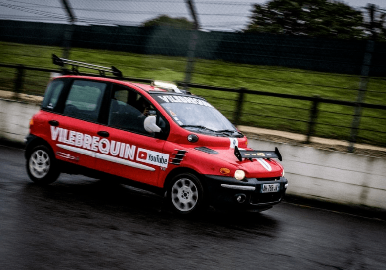

Le Fiat 1000tipla, un projet ambitieux

| Quelques caractèristiques |
|---|
| Constructeur: Fiat |
| Moteur 6162 cm³, 650 chevaux |
| Masse: Inconnue |
| 0-100km/h Oui |
| Début du projet en 2020 |
Le fiat 1000tipla est un projet lancé en 2020 ayant pour but de produire et mettre en course un fiat multipla avec un moteur de 1000 chevaux (comparable à une Bugatti Veyron). Financé par une campagne de dons, le projet a atteint la somme de 1 million d’euros !
Les créateurs du projet sont deux vidéastes sur la plateforme YouTube : Vilebrequin par Sylvain Levy et Pierre Chabrier. Avant la mise en projet du moteur de 1000 chevaux, ils ont réduit le poids du véhicule de 400 Kg en retirant tous les composants inutiles comme les sièges arrière, la moquette, les lumières ou le tableau de bord. Le véhicule s’appelle alors le multiplAMG en référence au préparateur de chez Mercedes. Son moteur d’origine gonflé à 150 chevaux couplé à un véhicule plus léger lui donne une accélération similaire à une Audi RS3. Lors d’une course automobile où il est engagé, le véhicule se remarque lorsqu’il parvient à dépasser une Lamborghini Countach en virage.
En 2020, les deux vidéastes lancent le projet nommé « 1000tipla » qui se présente en l’idée de doter un moteur de 1000 chevaux au monoplace italien. Ainsi, le moteur V8 d’une Chevrolet Corvette c7 z06 importé des Etats-Unis sera installé dans le multipla. Ce moteur de 650 chevaux sera préparé par l’entreprise W-autosport pour en sortir 1000 chevaux.
La cagnotte de 1 million d’euros servira à financer la préparation du véhicule, l’achat du véhicule « donneur » (ici la corvette) et la mise en place d’un grand salon où les donateurs pourront monter dans la voiture et faire des tours de circuit.
Le véhicule sera ainsi homologué route et peut se ranger dans la catégorie des véhicules de rally, puisque ce modèle de course est tiré depuis un véhicule de série produit à plus de 200 exemplaires.